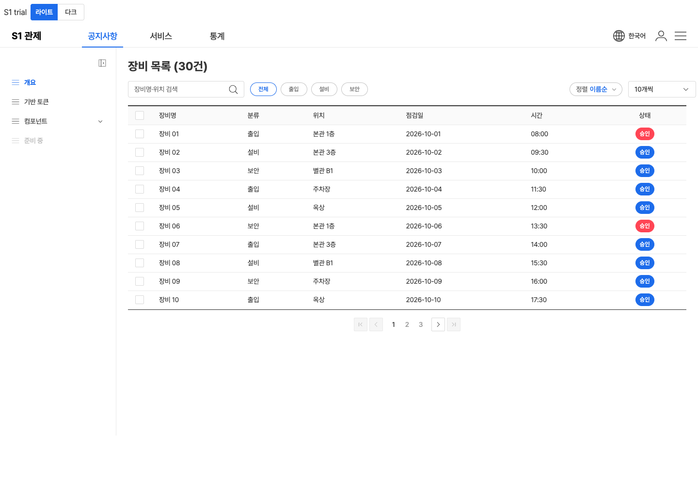
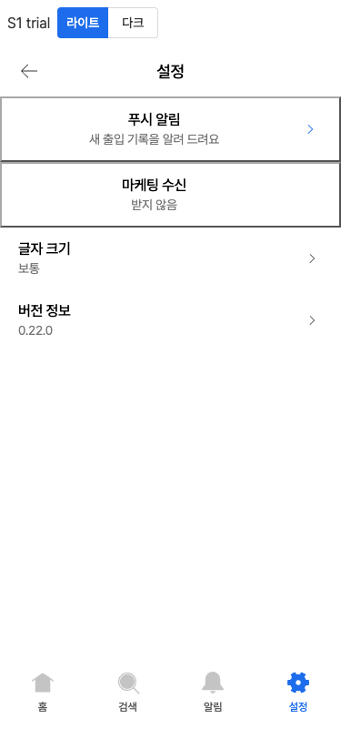
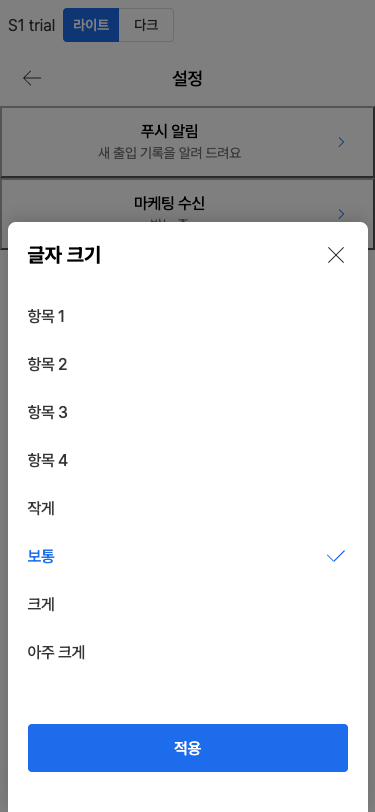
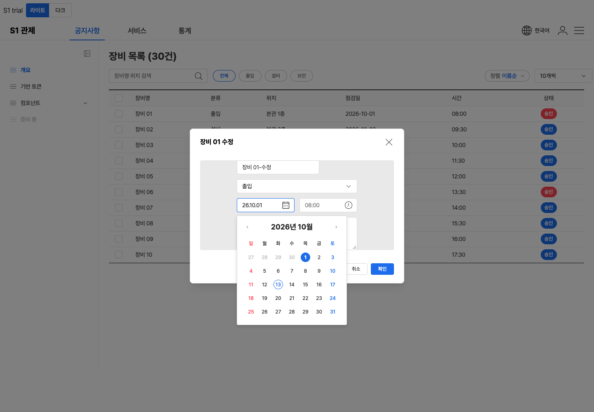
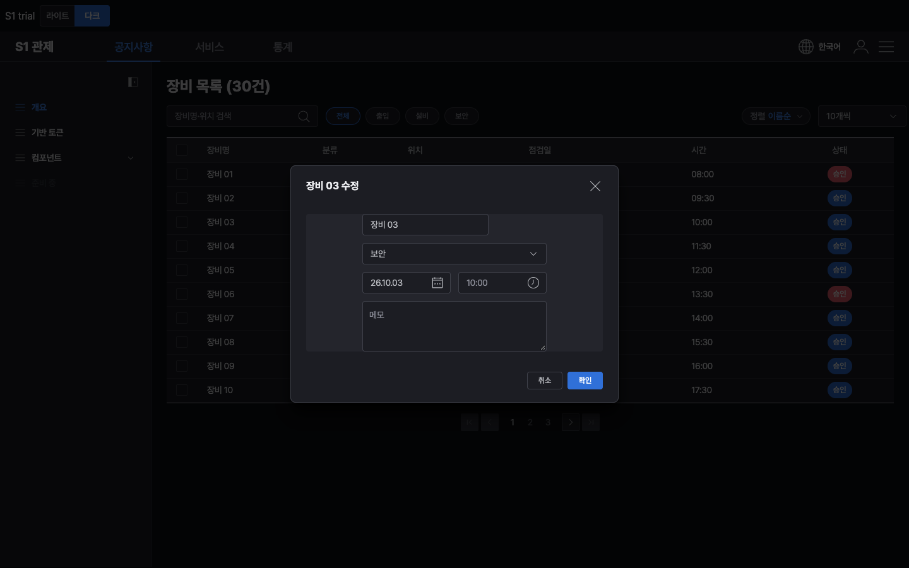

React판 개발자 성적표
2026-10-13 · 배포본 0.22.0 · 실제 React 19 + Vite 8 + TypeScript 6 환경에서 검수했습니다 → ① 부품 32종을 하나씩 띄워 기계로 확인 ② React 개발자 역할 에이전트가 받은 파일만 보고 화면 4개를 직접 만들어 봄
한 줄 판정
React판은 '실제 데이터로 화면을 만드는 부품'이 아니라 '모양 견본을 감싼 것'에 가깝습니다. 모양과 키보드 동작은 좋은데, 메뉴 글자·목록·값을 개발자가 넣을 수 없는 부품이 많습니다. 웹판에서 고친 설명서 내용도 React 묶음에는 옮겨지지 않았습니다.
① 넣은 내용이 안 들어감 — 가장 큰 문제
왼쪽 메뉴는 늘 "개요·기반 토큰·컴포넌트", 상태 꼬리표는 늘 "승인", 바텀시트에는 "항목 1~4"가 지워지지 않습니다. 상단 메뉴는 글자 칸이 하나라 세 메뉴가 같은 글자가 됩니다. 모달 버튼 두 개도 글자를 따로 못 씁니다.
모든 줄 값이 "seoul"이 되어, 무엇을 골랐는지 알 수 없습니다.
스위치가 안 보이고 줄 전체가 테두리 친 버튼이 됩니다. 아래 모바일 그림 위쪽 두 줄이 그 모습입니다.
② 화면과 값이 연결되지 않음
열림 값을 받지 않습니다. 바텀시트만 받는데, 열고 닫힘 알림은 오지 않습니다.
수정 창에 기존 날짜를 채우거나, 페이지를 넘길 때 목록을 바꾸려면 개발자가 우회 코드를 짜야 합니다.
다른 곳이 바뀌어 화면이 다시 그려지면 지운 글자가 되살아납니다.
값을 안 넣어도 그리기만 하면 오류가 콘솔에 찍힙니다.
하위메뉴 부품을 개발자가 따로 붙여야 열립니다. 이 방법은 설명서에 없습니다.
모바일 시간 선택은 한 번 눌러도 두 번 반응할 수 있습니다. React 개발자가 흔히 쓰는 방식(ref)으로 부품을 잡으면 칩 같은 부품의 동작이 꺼집니다. 폼으로 보낼 때 셀렉트·날짜·시간 값이 빠집니다.
③ 설명서·묶음
설치 안내가 없는 패키지 이름(@s1/ui-react)을 씁니다. 설명서가 부르는 버전 값이 타입 정의에 없습니다.
다크 모드 켜는 법, 글꼴, 바탕 스타일 파일, 하나만 켜는 칩 묶음, 고르면 닫히는 시트 안내가 없습니다. 부품 개수도 22종과 32종으로 엇갈립니다.
묶음 이름은 "React · Next.js"인데, Next.js가 요구하는 표시("use client")가 하나도 없습니다.
목록을 넣는 이름이 부품마다 다릅니다(optionLabel·content·cell·items). 이벤트 이름도 대소문자가 섞여 있습니다(onBeforechange·onSelectedChange). 타입이 느슨해 오타를 못 잡습니다.
묶음 자기 파일에서 오류 17,081건이 나오고, 진짜 문제(위 ①)는 못 잡습니다.
React 개발자가 만든 화면





잘 된 점
- 달력·셀렉트·표·창의 키보드 이동과 초점 가둠이 따로 손대지 않아도 동작합니다.
- 칩 하나만 켜기, 하단 탭 넘어가기 전 막기는 값을 쥐고 쓰는 방식으로 깔끔하게 됩니다.
- 필요한 부품만 가져가집니다 — 버튼 하나만 쓰면 0.6KB만 늘어납니다.
- 서버 렌더링 결과가 정상이고, 허용되지 않은 크기 값을 넣으면 바로 알려 줍니다.
아직 못 믿는 부분
Next.js는 깔지 않아서 "use client" 표시가 없다는 점만 확인했습니다. GNB 시험 중 한 번은 화면이 멈췄는데, 다시 돌리면 재현되지 않아 원인을 모릅니다. 글꼴은 이 맥에 Pretendard가 깔려 있어 없는 컴퓨터의 모습은 못 봤습니다.